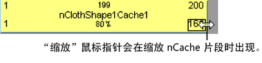
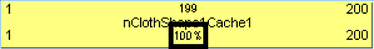
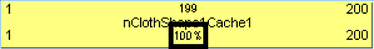
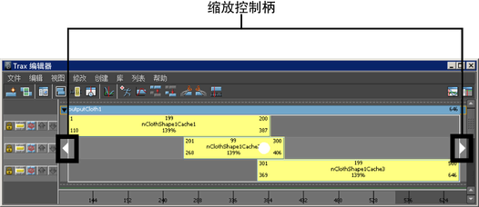
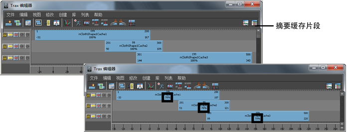

可以缩放 nCache 片段以加快或减慢对象的缓存模拟。
缩小（小于原始缓存片段长度的 100%）缓存片段会压缩缓存片段的模拟，以使生成的模拟看起来更快。放大（大于原始缓存片段长度的 100%）缓存片段会拉伸缓存片段的模拟，以使生成的模拟看起来更慢。
缩放 nCache 片段
- 在场景视图中，选择要缩放缓存片段的对象。
- 在“Trax 编辑器”(Trax Editor)中，选择“列表 > 加载选定角色”(List > Load Selected Characters)。
所有当前对象的缓存将作为片段显示在轨迹视图中。
- 选择要缩放的 nCache 片段。
- 执行下列操作之一：
- 拖动位于底角的片段热点以缩放缓存片段。 
- 双击 (
 ) 缓存片段上的比例值，键入新的比例值，然后按
) 缓存片段上的比例值，键入新的比例值，然后按  键。 
键。  - 在“通道盒”(Channel Box)中，设定缓存片段的“比例”通道值。
请参见缩放。
- 拖动位于底角的片段热点以缩放缓存片段。
同时缩放多个 nCache 片段
- 在场景视图中，选择要缩放缓存片段的对象。
- 在“Trax 编辑器”(Trax Editor)中，选择“列表 > 加载选定角色”(List > Load Selected Characters)。
所有当前对象的缓存将作为片段显示在轨迹视图中。
-
 键选择要缩放的 nCache 片段。
键选择要缩放的 nCache 片段。 将显示缓存片段缩放控制柄。
 - 向左或向右拖动缩放控制柄来同时缩放所有选定 nCache 片段。
缩放一个对象的所有缓存片段
- 在场景视图中，选择要缩放缓存片段的对象。
- 在“Trax 编辑器”(Trax Editor)中，选择“列表 > 加载选定角色”(List > Load Selected Characters)。
在轨迹视图中，当前对象的所有缓存都显示为片段。
- 拖动摘要缓存片段的左/右边以缩放选定对象的所有缓存片段。 